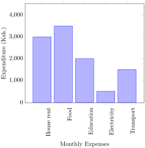
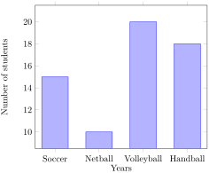
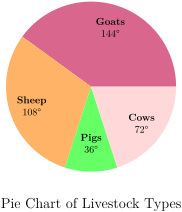
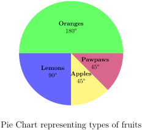
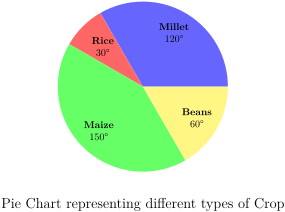
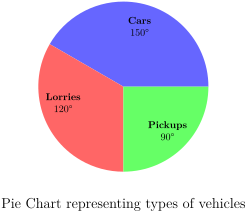
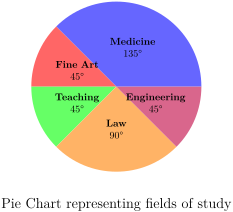
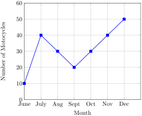
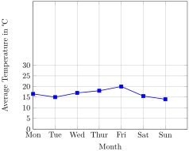
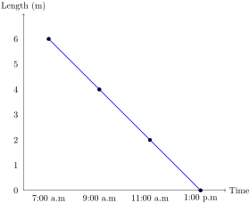

Skip to main content
Contents Dark Mode Prev Up Next \(\newcommand{\N}{\mathbb N} \newcommand{\Z}{\mathbb Z} \newcommand{\Q}{\mathbb Q} \newcommand{\R}{\mathbb R}
\newcommand{\lt}{<}
\newcommand{\gt}{>}
\newcommand{\amp}{&}
\definecolor{fillinmathshade}{gray}{0.9}
\newcommand{\fillinmath}[1]{\mathchoice{\colorbox{fillinmathshade}{$\displaystyle \phantom{\,#1\,}$}}{\colorbox{fillinmathshade}{$\textstyle \phantom{\,#1\,}$}}{\colorbox{fillinmathshade}{$\scriptstyle \phantom{\,#1\,}$}}{\colorbox{fillinmathshade}{$\scriptscriptstyle\phantom{\,#1\,}$}}}
\)
Section 5.1 Data handling
Subsection 5.1.1 Meaning of data
Data is a collection of facts such as numbers and measurements that we learn, make decisions or solve problems.
An example of data in a classroom could be the information on finding out how many pens each group in the classroom has. Here is the data we collected:
Group Names: Group 1, Group 2, Group 3
This information is considered data because counting pens helps us manage and organize our resources effectively. For instance, if one group needs more pens, we can identify which group has extra pens to share. You could use this data to figure out things like:
Which group has the most pens?
How many pens are there in total?
What is the average number of pens per group?
Activity 5.1.1 .
(i) Each learner state their understanding of the term data.
(ii) Search for the meaning of data from different sources.
(iii) Discuss and compare with other groups.
Data is a collection of facts such as numbers and measurements collected to represent information.
Subsection 5.1.2 Collection of data
A collection of data refers to the process of gathering and assembling relevant pieces of information or facts from various sources for analysis or use.
This data can be quantitative (numerical) or qualitative (descriptive) and is typically organized in a structured manner to allow for efficient examination or decision-making.
Data collection can take many forms, such as:
Surveys and questionnaires: Gathering responses from individuals
Experiments: Recording observations or measurements during controlled experiments.
Interviews: Collecting qualitative data through direct interactions.
Activity 5.1.2 .
(i) Collect data on the number of classrooms in your school.
(ii) Count the number of textbooks for each subject in your class.
(iii) Collect data on the number of male and female in your class.
(iv) Collect information on the number of left handed students in your class.
(v) Discuss and compare with other groups.
Data collected from different situations vary from each other.
Subsection 5.1.3 Frequency distribution table
A frequency distribution table displays the frequency of each data set in an organized way.
Frequency is the rate at which something occurs over a particular period of time or in a given sample.
It helps us to find patterns in the data and also enables us to analyze the data using measures of central tendency and variance.
Activity 5.1.3 .
(i) Consider the following list showing the favourite fruits for learners.
Table 5.1.1. Frequency distribution table
Kemunto
Banana
Otieno
Apple
Kamau
Apple
Esipisu
Banana
Omar
Guava
Sidika
Apple
Nanjala
Guava
Njoki
Banana
Sagar
Guava
Baraza
Banana
Anyango
Banana
Issa
Banana
(ii) Represent the information in a table that has Fruit, Tally and Frequency.
(iii) Compare and discuss with other groups.
A tally mark represents one unit. One mark represent a frequency of one.
A table having one unit and the number of times it occurs is a frequency table
Example 5.1.2 .
The height, in centimetres, of 30 tree seedlings were recorded as follows:
15 20 18 15 20 15 16 14 20 14 12 14 15 16 10
12 10 16 18 15 16 11 13 16 14 12 17 16 20 19
Draw a frequency distribution table to represent this information.
Solution .
Table 5.1.3. Frequency distribution table representing tree seedling
10
//
2
11
/
1
12
///
3
13
/
1
14
////
4
15
/////
5
16
//////
6
17
/
1
18
//
2
19
/
1
20
////
4
Example 5.1.4 .
In a quiz, the marks obtained by 20 students out of 30 are given as follows
12,15,15,29,30,21,30,30,15,17,19,15,20,20,16,21,23,24,23,21
Draw a frequency distribution table to represent this information.
Solution .
Table 5.1.5. Frequency distribution table representing students marks
12
/
1
15
////
4
16
/
1
17
/
1
19
/
1
20
//
2
21
///
3
23
//
2
24
/
1
29
/
1
30
///
3
Subsection 5.1.4 Suitable scale for graphs of data
Activity 5.1.4 .
(i) consider the table below
Table 5.1.6.
4
2
5
10
6
5
7
20
8
3
9
4
(ii) Determine a suitable scale you would use to draw a bar graph.
(iii) Discuss and compare with other groups.
A suitable scale should be chosen in such a way that data is easy to plot and easy to read.
Subsection 5.1.5 Pictographs of data
A pictograph is a type of data visualization that uses pictures or symbols to represent and convey data.
Each picture or symbol typically represents a specific quantity or value, making it easier to understand and interpret data.
Activity 5.1.5 .
(i) Consider the table shown
Table 5.1.7. Favourite musical instrumentkey: 😊represents four children
(ii) Write down the number of children whose favourite musical instrument is: (a) Guitar (b) Drum (c) Keyboard (d) Flute
(iii) Discuss and compare with other groups.
A pictograph is a representation of data using images, icons and symbols.
Example 5.1.8 .
The following pictograph shows the number of students who were absent from a class in a given week.
Table 5.1.9.
Monday
🧍🏼🧍🏼🧍🏼🧍🏼🧍🏼
Tuesday
Wednesday
🧍🏼🧍🏼
Thursday
🧍🏼🧍🏼🧍🏼
Friday
🧍🏼
Key: 🧍🏼represents one student
(a) On which day were the maximum number of students absent?
(b) Which day had full attendance?
Example 5.1.10 .
The table shows the number of students present in a class of 32 in a week.
Table 5.1.11.
Monday
24
Tuesday
20
Wednesday
28
Thursday
32
Friday
28
Represent the information in a pictograph.
Solution .
Key: 🧍🏼represents 4 students
Table 5.1.12.
Monday
🧍🏼🧍🏼🧍🏼🧍🏼🧍🏼🧍🏼
Tuesday
🧍🏼🧍🏼🧍🏼🧍🏼🧍🏼
Wednesday
🧍🏼🧍🏼🧍🏼🧍🏼🧍🏼🧍🏼🧍🏼
Thursday
🧍🏼🧍🏼🧍🏼🧍🏼🧍🏼🧍🏼🧍🏼🧍🏼
Friday
🧍🏼🧍🏼🧍🏼🧍🏼🧍🏼🧍🏼🧍🏼
Example 5.1.13 .
The pictograph below shows the number of books borrowed from a school library over five days
Table 5.1.14.
Monday
📙📙📙📙📙
Tueday
📙📙📙📙
Wednesday
📙📙📙📙📙📙
Thursday
📙📙📙
Friday
📙📙📙📙📙📙📙
Answer the following questions:
(a) How many books were borrowed on Monday?
(b) On which day were the most books borrowed?
(c) How many books were borrowed in total during the week?
(d) How many more books were borrowed on Friday compared to Thursday?
Solution .
(a)
\(5\times 10=50\) Therefore, 50 books were borrowed on Monday
(c) Total Books Borrowed:
Total =
\(50+40+60+30+70 = 250\)
Therefore,
\(250\) books were borrowed throughout the week.
(d) More Books Borrowed on Friday than Thursday:
Difference =
\(70 - 30 = 40\) books
Subsection 5.1.6 Bar graphs of data
Bar graph is a visual representation of data where individual bars (rectangular shapes) are used to represent the values or frequencies of different categories.
The length or height of each bar corresponds to the value it represents, making it easy to compare different categories.
Activity 5.1.6 .
(i) Consider the table below showing the number of loaves of bread sold in a school canteen in a week.
Table 5.1.15.
Number of leaves sold
100
250
200
150
300
(ii) Choose a suitable scale to represent the data on a graph.
(iii) Using bars, represent the data on a graph.
(iii) Compare and discuss with other groups.
Example 5.1.16 .
The table below shows monthly expenses of a household in a certain month.
Table 5.1.17. Monthly expenses of a household in a certain month
House Rent
3000
Food
3500
Education
2000
Electricity
500
Transport
1500
Represent the data on a bar graph
Solution .
(i) Choose a suitable scale for the length of bars, for example, let 1cm represent Ksh. 500.
(ii) Work out the Length of the bars as shown.
Table 5.1.18. Frequency table
House rent
3000
6
Food
3500
7
Education
2000
4
Electricity
500
1
Transport
1500
3
(iii) Draw a bar graph for the data.

Example 5.1.19 .
The bar graph shown represents favourite games for a number of learners.

Find the number of learners whose favourite game was:
Find the total number of learners whose favourite game was soccer, netball or volleyball.
Subsection 5.1.7 Pie charts of data
A pie chart is a type of graph representing data in a circular form, with each slice of the circle representing a fraction or proportionate part of the whole. All slices of the pie add up to make the whole equaling 100 percent and 360 degrees.
Activity 5.1.7 .
(i) Consider the table below
Table 5.1.20.
Number of students
200
100
80
20
(ii) Draw a circle of suitable radius.
(iii) Divide the circle into sectors to represent the information.
(iv) Compare and discuss with other groups.
Frequency is represented by the size of a sector in a pie chart.
Example 5.1.21 .
The Table below shows different types of animals kept by a farmer.
Table 5.1.22.
Number of animals
12
24
18
6
Draw a pie chart to represent this information
Solution .
The total angle at the centre of a circle is
\(360^\circ\text{.}\) The central angles of sectors representing the animals are fractions of
\(360^\circ\text{.}\) The total number of animals in the farm is 12+24+18+6 = 60.
Table 5.1.23.
Cows
\(12\) \(\frac{1}{5}\) \(\frac{1}{5}\times360^\circ = 72^\circ \)
Goats
\(24\) \(\frac{2}{5}\) \(\frac{2}{5}\times360^\circ = 144^\circ\)
Sheep
\(18\) \(\frac{3}{10}\) \(\frac{3}{10}\times360^\circ = 108^\circ\)
Pigs
\(6\) \(\frac{1}{10}\) \(\frac{1}{10}\times360^\circ = 36^\circ\)

Example 5.1.24 .
Murunga is a fruit farmer. The table below shows the number of fruit trees on Murunga’s farm.
Table 5.1.25. Pie chart to represent the number of treesDraw a pie chart to represent the number of trees.

Solution .
Total number of trees is
\(600\) +
\(300\) +
\(150\) +
\(150\) =
\(1200\)
Oranges
\(\frac{600}{1200}\times 360^\circ = 180^\circ\)
Apples
\(\frac{150}{1200}\times 360^\circ = 45^\circ\)
Pawpaws
\(\frac{150}{1200}\times 360^\circ = 45^\circ\)
Lemons
\(\frac{300}{1200}\times 360^\circ = 90^\circ\)
Subsection 5.1.8 Interpretation of pie charts
Activity 5.1.8 .
(i) Consider the pie chart representing different types of crops planted in a 6 hectare farm shown.

(ii) Find and record the information represented in the pie chart.
(iii) Discuss and share with other groups.
Information represented in a pie chart is obtained using the total number of items represented and the angles expressed as fractions of
\(360^\circ\text{.}\)
Example 5.1.26 .
The pie chart shows types of vehicles that passed by a school gate within one hour.

If the number of vehicles that passed by the school were 72, find how many lorries, pickups and cars passed by the school gate.
Solution .
The number of lorries were
\(\frac{120^\circ }{360^\circ }\times 72=24\)
The number of pick ups were
\(\frac{90^\circ }{360^\circ }\times 72=18\)
The number of cars were
\(\frac{150^\circ }{360^\circ }\times 72=30\)
Example 5.1.27 .
The pie chart below represents careers that
\(56\) learners would love to pursue in future.

(a) How many learners want to pursue Law?
(b) How many learners want to pursue Fine Art?
(c) How many learners want to pursue Medicine?
(d) How many learners want to pursue Teaching?
Solution .
Measure the angle representing each career.
(a) Number of learners who want to pursue Law is
\(\frac{90^\circ }{360^\circ }\times 56=14\)
(b) Number of learners who want to pursue Fine Art is
\(\frac{45^\circ }{360^\circ }\times 56=7\)
(c) Number of learners who want to pursue Medicine is
\(\frac{135^\circ }{360^\circ }\times 56=21\)
(d) Number of learners who want to pursue Teaching is
\(\frac{45^\circ }{360^\circ }\times 56=7\)
Number of learners who prefer Medicine to Teaching is
\(21-7=14\)
Subsection 5.1.9 Line graphs of data
Line graph of data is a visual representation of data where individual data points are connected by straight lines, showing how a variable changes over time or across a continuous scale, typically with the horizontal axis representing time and the vertical axis representing the measured values.
It is used to identify trends and patterns in data over a period of time.
Activity 5.1.9 .
Consider the table shown on the amount of recorded rainfall in a place for a period of six months.
Table 5.1.28. Amount of Rainfall for a period of six months
Amount of Rainfall(mm)
50
70
80
150
140
110
Represent the information on a line graph.
Share and discuss with other groups.
In line graphs, points are connected with straight lines to represent changes in values over a period of time.
Example 5.1.29 .
The table shown represents the sale of motorcycles by a company from the month of June to December 2021
Table 5.1.30.
No. of motocycles
10
40
30
20
30
40
50
Draw a line graph to represent the information
Solution .
Scale 1 cm represents 10 motorcycles.

Example 5.1.31 .
The table below shows recorded average temperature of a place in a week.
Table 5.1.32. Average temperature in a weekSolution .
Scale 1 cm represents
\(5^\circ C\)

Example 5.1.33 .
A Learner measured changes in the length of a flag post’s shadow at different times. She recorded the lengths as shown. Below is a representation of the line graph
Table 5.1.34. Time vs Lengths in metres
Time
7:00 a.m
9:00 a.m
11:00 a.m
1:00 p.m
Lengths in metres
6 m
4 m
2 m
0 m
